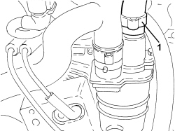
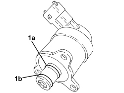

1060E50 PRESSURE REGULATOR ON PRESSURE PUMP - R.R.
- Path
- Procedures > 10 ENGINE > 1060 DIESEL INJECTION SYSTEM > 1060E DIESEL PRESSURE PUMP AND CONTROL > 1060E50 PRESSURE REGULATOR ON PRESSURE PUMP - R.R.
- Kind
- repair procedure (removal / refitting; the operation number is the code)
- Applies to
- engines: 1.9 JTD 8v, 1.9 JTD 16v, 2.4 JTD 20v; all production periods
- Interactive page
- https://sloeber94.github.io/elrnDB-fCrm/en/#/194000328
Applies to: engines: 1.9 JTD 8v, 1.9 JTD 16v, 2.4 JTD 20v; all production periods
 Removing
Removing
 Refitting
Refitting- Make sure that the ignition key is in the OFF position, then disconnect the battery terminal (-).
Description | Connector | |
|---|---|---|
- | Battery |
Op. 1016A10 SOUND-PROOFING COVER - R.R
- Clean the high pressure pump using cold cleaning products and dry with compressed air.
Op. 1060F20 PIPE FROM PRESSURE PUMP TO FUEL MANIFOLD - R.R.
1. Loosen the band and disconnect the outlet pipe from the engine oil vapour separator.

Applies to: engines: 1.9 JTD 8v, 1.9 JTD 16v, 2.4 JTD 20v; all production periods
1. Disconnect the electrical connection for the fuel pressure regulator.
Description | Connector | |
|---|---|---|
1 | Fuel pressure regulator |
2. Undo the bolts fixing the fuel pressure regulator.
3. Manually rotate the pressure regulator in its housing in an anti-clockwise direction and remove it.

Applies to: engines: 1.9 JTD 8v, 1.9 JTD 16v, 2.4 JTD 20v; all production periods
- Remove any dirt from the pressure pump opening or in the spaces on the surface.
Applies to: engines: 1.9 JTD 8v, 1.9 JTD 16v, 2.4 JTD 20v; all production periods
Refitting
Removing1. Before fitting the fuel pressure regulator, check that the green seal (1a) and the black seal (1b) are intact and correctly housed.

Applies to: engines: 1.9 JTD 8v, 1.9 JTD 16v, 2.4 JTD 20v; all production periods
- Lubricate the seals with clean diesel fuel.
- Place the pressure regulator in its housing on the pressure pump.
- Manually rotate the fuel pressure regulator in an anti-clockwise direction and press until the matching surfaces are in contact.
- Position the fuel pressure regulator correctly.
- Tighten the bolts fixing the fuel pressure regulator to the recommended torque.
Component | Fastening | dia | Value (daNm) | Validity |
|---|---|---|---|---|
Fuel pressure regulator | Bolt | M......... | (pressure pump side) 0.6 - 0.7 | 1.9 JTD 16v 1.9 JTD 8v 2.4 JTD 20v |
- Connect the electrical connection to the fuel pressure regulator.
- Connect the outlet pipe to the engine oil vapour separator and tighten the band.
Op. 1060F20 PIPE FROM PRESSURE PUMP TO FUEL MANIFOLD - R.R.
Op. 1016A10 SOUND-PROOFING COVER - R.R
- Connect the negative battery terminal.
Topics linked from this page (4)
- 1016A10 SOUND-PROOFING COVER - R.R
- 1060F20 PIPE FROM PRESSURE PUMP TO FUEL MANIFOLD - R.R.
- A001 BATTERY
- N077 FUEL PRESSURE REGULATOR
Topics that link to this page (11)
- B010 ENGINE DOES NOT START (UNDER ANY CIRCUMSTANCES)
- B013 ENGINE STARTS WITH DIFFICULTY
- B015 ENGINE DOES NOT START (STARTER MOTOR WORKING)
- D005 ENGINE DOES NOT PRODUCE BEST PERFORMANCE
- D014 ENGINE GOING OFF ON IDLING (THEN RESTARTING)
- D020 ENGINE CUTS OUT WHILST RUNNING (THEN NOT RESTARTING)
- D021 ENGINE CUTS OUT WHILST RUNNING (THEN RESTARTS)
- Y002 P0087 - PRESSURE ON FLUTE
- Y003 P0088 - PRESSURE ON FLUTE
- Y104 P0237 - TURBO PRESSURE
- Y105 P0238 - TURBO PRESSURE